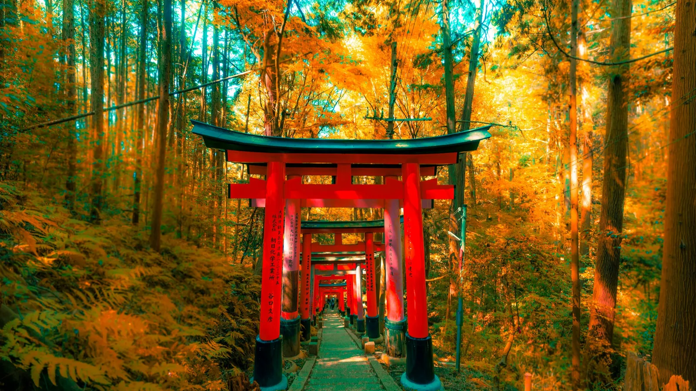
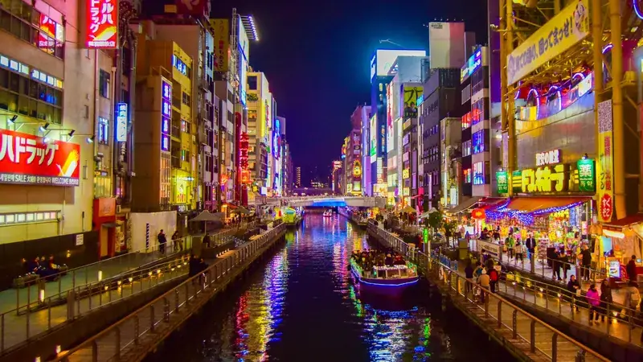

The short answer
For a first week in Japan, keep it to the Golden Route: 3 nights in Tokyo, 3 in Kyoto and 1 in Osaka, with a day trip to Nara. One Shinkansen ride links Tokyo and Kyoto; Kyoto, Nara and Osaka are close together by local train. If you can, fly into Tokyo and out of Osaka (Kansai airport).
The 7-day plan at a glance
| Day | Where you sleep | Highlights |
|---|---|---|
| 1 | Tokyo | Arrive, Shibuya Crossing, Shinjuku at night |
| 2 | Tokyo | Asakusa and Senso-ji, Ueno, Akihabara |
| 3 | Tokyo | Meiji Shrine, Harajuku, Shibuya Sky or Tokyo Skytree |
| 4 | Kyoto | Shinkansen, Fushimi Inari, Gion at dusk |
| 5 | Kyoto | Kiyomizu-dera, Higashiyama, Arashiyama bamboo grove |
| 6 | Kyoto | Day trip to Nara: deer park, Todai-ji |
| 7 | Osaka | Osaka Castle, Dotonbori street food |
Days 1–3: Tokyo
Day 1 · Arrive and first evening
Get into the city from the airport (see Narita and Haneda to Tokyo) and set up an IC card for trains — read Suica and Pasmo. In the evening: Shibuya Crossing and the lights of Shinjuku.
Day 2 · Old Tokyo
Morning at Senso-ji in Asakusa before the crowds, then Ueno Park and the electronics and anime shops of Akihabara.
Day 3 · Shrines and views
Meiji Shrine in the forest, then Takeshita Street in Harajuku. End with the view from Shibuya Sky or Tokyo Skytree (book a sunset slot).
Days 4–6: Kyoto and Nara
Day 4 · Shinkansen and Fushimi Inari
The Nozomi Shinkansen goes from Tokyo or Shinagawa to Kyoto in about 2h15 (sit on the right side, seat E, for a chance to see Mount Fuji). Send big suitcases ahead with a luggage delivery service. In the afternoon walk the red gates of Fushimi Inari, then Gion at dusk.
Day 5 · Temples and bamboo
Early start at Kiyomizu-dera, then down the old streets of Higashiyama. After lunch, take the JR line to Arashiyama for the bamboo grove — it is far less crowded in the late afternoon.
Day 6 · Day trip to Nara
Nara is about 45 minutes from Kyoto by Kintetsu or JR train. See the bowing deer in Nara Park and the giant Buddha of Todai-ji. Back in Kyoto for dinner in Pontocho.
Day 7: Osaka

Day 7 · Castle and street food
The JR Special Rapid takes about 30 minutes from Kyoto to Osaka. Visit Osaka Castle, then eat your way through Dotonbori: takoyaki, okonomiyaki and kushikatsu. Next day, fly home from Kansai airport (KIX).
Trains: what to know
- Buy the Tokyo → Kyoto Shinkansen online or at the ticket machines; reserved seats are worth it on weekends and holidays.
- Suitcases over 160 cm (length + width + height) need a reserved oversized-baggage seat — details in our Shinkansen guide.
- Use your IC card (Suica/Pasmo/ICOCA) for local trains, subways and buses in all four cities.
Tips to make it work
- Avoid Golden Week (late April–early May) and the peak of the cherry blossom and autumn leaves seasons, or book hotels months ahead.
- Start every day early: the famous sights in Kyoto are calm before 8:00 and packed by 10:00.
- Learn a few phrases for restaurants — see Japanese restaurant phrases.
- Know what to do in an earthquake: read Earthquakes in Japan for tourists.
Ready to book?
Affiliate links: if you book, 687 may earn a commission at no extra cost to you.
Your first week, already organised.
In 687 Japan you add Tokyo, Kyoto and Osaka as stages: each one shows the right Shinkansen station, the transit route and a ticket search ready with your date. When rain, a delay or an earthquake alert hits, NOW rebuilds the rest of your day.